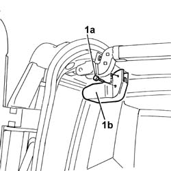
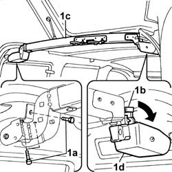
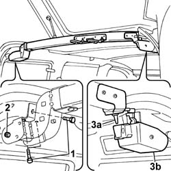
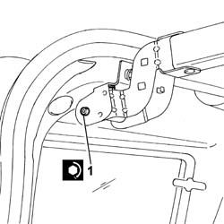

7030F34 support beam (rear) of flap on load compartment roof - r+r
- Path
- Procedures > 70 FITTINGS > 7030 SUN ROOF AND HOOD > 7030F flap on load compartment roof > 7030F34 support beam (rear) of flap on load compartment roof - r+r
- Kind
- repair procedure (removal / refitting; the operation number is the code)
- Applies to
- all engines; all production periods
- Interactive page
- https://sloeber94.github.io/elrnDB-fDbl/en/#/2585114
Applies to: all engines; all production periods
 Removing
Removing
 Refitting
Refitting1. Undo the bolts (1a) and remove the trim (1b).

Applies to: all engines; all production periods
1. Undo the fixing bolts (1a), rotate the lever (1b) and remove the crossmember (1c), releasing it from the support (1d).

Applies to: all engines; all production periods
Refitting
Removing1. Position the crossmember and tighten the fixing bolts to torque.
2. Loosen the bolt to allow the adjustment of position of the crossmember.
3. Proceed with the adjustment, checking that the pin (3a) on the crossmember and the opening in the bracket (3b) are perfectly aligned.

Applies to: all engines; all production periods
1. When the adjustment is completed, tighten the fixing bolt.

Applies to: all engines; all production periods
Fit the embellishment and secure it with its screws.